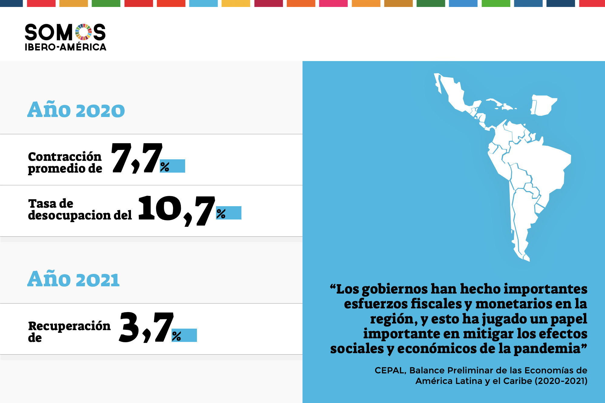

Impacto económico de la pandemia en los países en desarrolloCómo la pandemia ha afectado económicamente a los países en desarrollo |
||
SeccionesOtras Noticias
Acceso |
El impacto económico global de la pandemia en los países en desarrolloLa pandemia de COVID-19 ha tenido un impacto devastador en la economía mundial, y los países en desarrollo han sido especialmente vulnerables. La caída de los precios de los productos básicos, las interrupciones en las cadenas de suministro globales y la pérdida de empleos han afectado gravemente a las economías de estos países. Las economías en desarrollo, que dependen en gran medida de sectores como la agricultura, el turismo y las exportaciones de materias primas, se vieron obligadas a enfrentarse a una doble crisis: la sanitaria y la económica. El cierre de fronteras y la paralización de las actividades económicas provocaron una desaceleración dramática del crecimiento económico. Aumento de la pobrezaSegún el Banco Mundial, más de 100 millones de personas en los países en desarrollo fueron empujadas a la pobreza extrema debido a la pandemia. Las familias más vulnerables, que ya enfrentaban dificultades económicas antes del brote del virus, se vieron aún más afectadas por la crisis. La falta de acceso a servicios de salud adecuados, junto con la pérdida de ingresos, exacerbó la situación. Recuperación económicaAunque algunos países en desarrollo han comenzado a experimentar una ligera recuperación, el proceso será largo y complicado. La falta de recursos para la inversión en infraestructura, educación y salud puede retrasar aún más la recuperación. Sin embargo, la comunidad internacional ha respondido con programas de ayuda financiera, préstamos y apoyo a través de organismos internacionales. El papel de la tecnología en la recuperaciónA pesar de las dificultades, la pandemia también ha impulsado la adopción de tecnologías digitales en los países en desarrollo. Desde la educación en línea hasta el comercio electrónico y los servicios de salud a distancia, las tecnologías han permitido que algunos sectores sigan operando durante la crisis. Esta transformación digital podría ser clave para la recuperación económica a largo plazo, ya que los países en desarrollo tienen la oportunidad de mejorar su infraestructura digital y aprovechar los avances tecnológicos. |
Noticias Recientes |
|
© 2025 Noticias Hoy - Todos los derechos reservados |
||